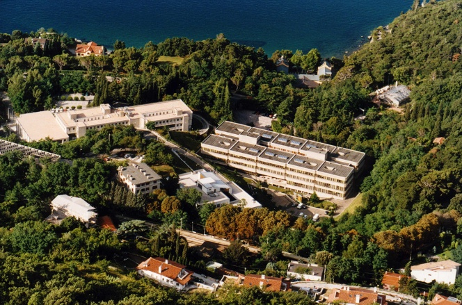

School goals
- To train young scientists in the area of radiation detectors and their applications.
- To stimulate the development of experimental particle and nuclear physics in developing countries.
- To promote multidisciplinary applications of experimental techniques.
- To promote the participation of young physicists and engineers in international experiments in particle and nuclear physics and related fields.
“Danube School on Instrumentation in Elementary Particle & Nuclear Physics”, jointly organized by CERN, ECFA, ICFA and the University of Novi Sad, will continue the tradition of offering schools with lectures and “hands-on” exercises on instrumentation in particle and nuclear physics. This one week school will bring together lecture courses and practical exercises, both held by eminent researchers and professors actively involved in the field of particle and nuclear physics. All laboratory experiments are designed to demonstrate the material presented within lecture session.
School attendance
This is a truly international school open to a maximum of 60 students from all over the world. The priority is given to students from Universities in Danube region, and students from emerging countries. Since a second very important aim is to promote future collaborations between young physicists working in the same or similar areas of research, students from the technically advanced regions worldwide are also welcome.
Possible grants may be provided for the best students from emerging countries.

School history
The ICFA schools started in 1987 at the International Center of Theoretical Physics (ICTP) of Trieste. The aim of the school was to share the expertise in new detector technologies with physicists from less developed countries guests of the ITCP. After that very positive experience, reproduced in 1989 again in Trieste, the school started to be organized abroad, in sites located outside the highly industrialized parts of the world.
So far the schools were held as follows
- 1987 ICTP, Trieste
- 1989 ICTP, Trieste
- 1990 Rio de Janeiro, Brazil
- 1991 ICTP Trieste, Italy
- 1993 Bombay, India
- 1995 Ljubljana, Slovenia
- 1997 Leon, Guanajuato, Mexico
- 1999 Istanbul, Turkey
- 2001 Cape Town, South Africa
- 2004 Itacuruça, Rio de Janeiro, Brazil
- 2010 San Carlos de Bariloche, Argentina
- 2012 Bogotá, Colombia.